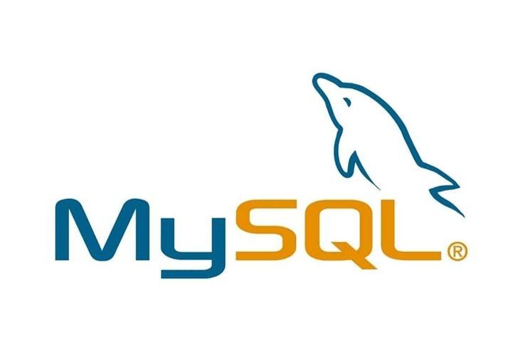
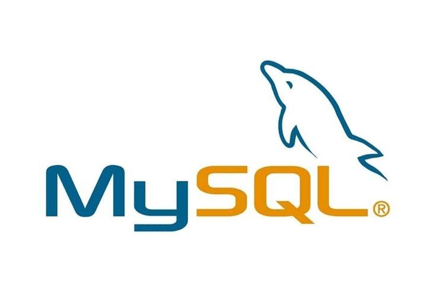

Sanchita Chari
Full Stack Java Developer
Summary
- Work oriented smart working individual, team player.
- Strong analytical, data processing and problem solving capabilities.
- Quick learner, flexible and adaptable to changing environment.
Education
- CDAC Mumbai - PGDAC
- Aug 2016 - Jan 2017
- First Class
- Goa University - BE Information Technology
- Jul 2010 - Jul 2015
- Second Class
Work Experience
- Accenture Pvt. Ltd - Application Development Analyst -- Dec 2020 - Jun 2022
- Agile way of onboarding of a new insurance tenant based on clients dynamic requirements by adding new code or updating existing Java code, while dynamically designing and modifying the user interface using HTML, CSS, JQuery, and JavaScript.
- Demonstrated a comprehensive understanding of database functionalities for data management.
- Goa Electronic Ltd - Trainee Software Developer -- Nov 2018 - Oct 2020
- Devised a new service in Java for the Application using waterfall model, which involved gathering relevant client information, designing the service UI in Excel, creating a DB structure, developing the services, integrating them with the existing system, and conducting comprehensive unit testing, resulting in an efficient and highly functional system.
- Collaborated effectively with diverse professionals to create a robust method for modifying tables and views that met all business requirements.
Skill Set
 
About Me

About Me